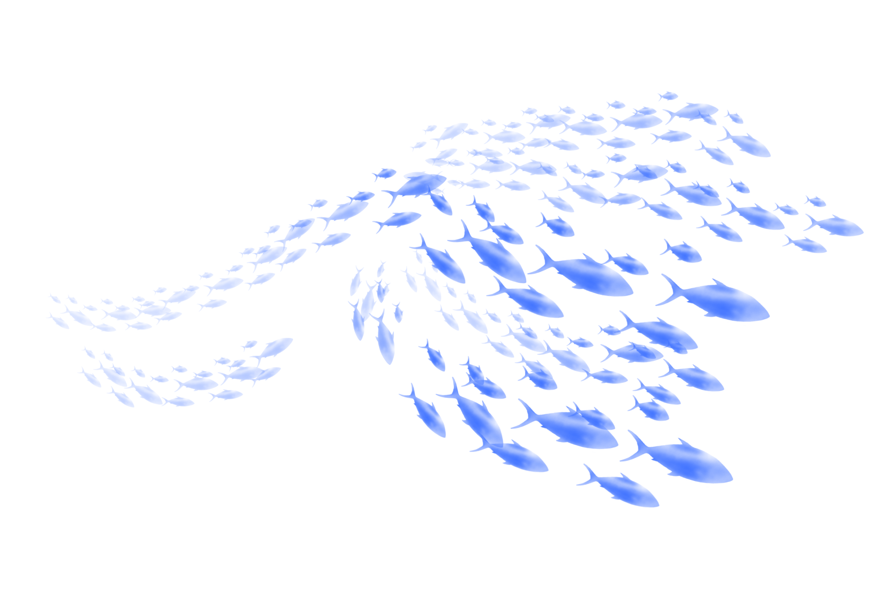
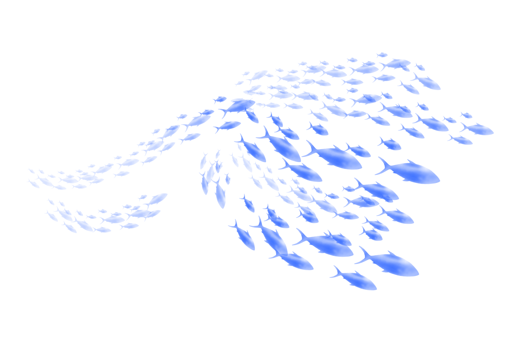

We are a student led group interested in unveilling the truth surrounding the ongoing sewage scandal. As part of our Masters degree, we have come together,
combining all of the skills we have learnt throughout the year, to complete a project on a topic of our choice. Our project topic is one that we feel particularly
passionate about, with one of our group members being from Cornwall herself.
Marine pollution is an ever-growing problem in today's world. Our oceans are frequently being flooded with two main types of pollutant: chemicals and trash.
The South West of England has some of the finest bathing waters and beaches, however these are often put in jeapody by hazardous sewage dumpings and agricultural
run off. For the most part, our project focuses in on Cornwall specifically, a popular holiday location renowned for its stunning coast. It is also claimed to have
the highest water quality within England, according to the Environment Agency.
This project aims to highlight some of the shocking realities of sewage pollution and the quality of our bathing waters, in addition to shining a
spotlight on some of the fantastic projects and campaigns that are turning the tide on the sewage scandal.
We wanted to thank everyone who has helped us make this project possible. From those who have been generous enough to commit their time to interviews and meetings, or responding to our emails, to those who have kindly lent us their art and photography.
Computational & Data Journalism Masters Student
craigz@cardiff.ac.uk
Computational & Data Journalism Masters Student
ratnamt@cardiff.ac.uk
Computational & Data Journalism Masters Student
vakilya@cardiff.ac.uk